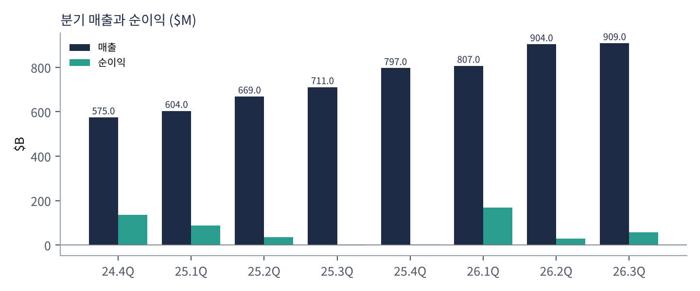
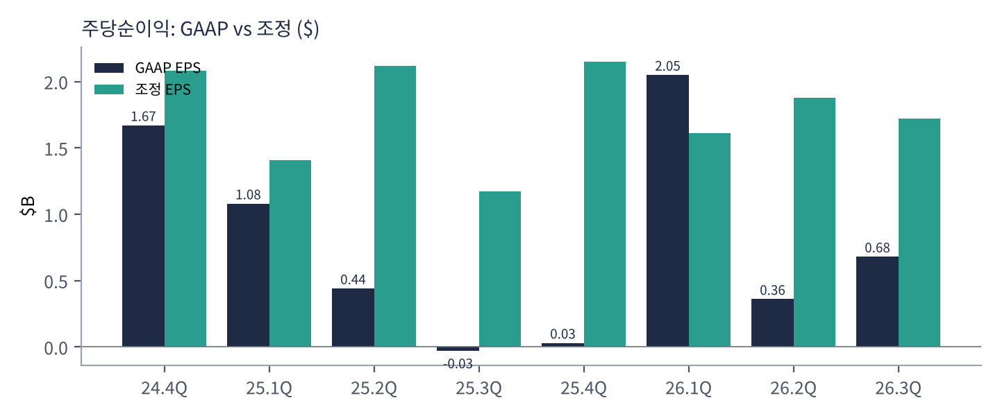
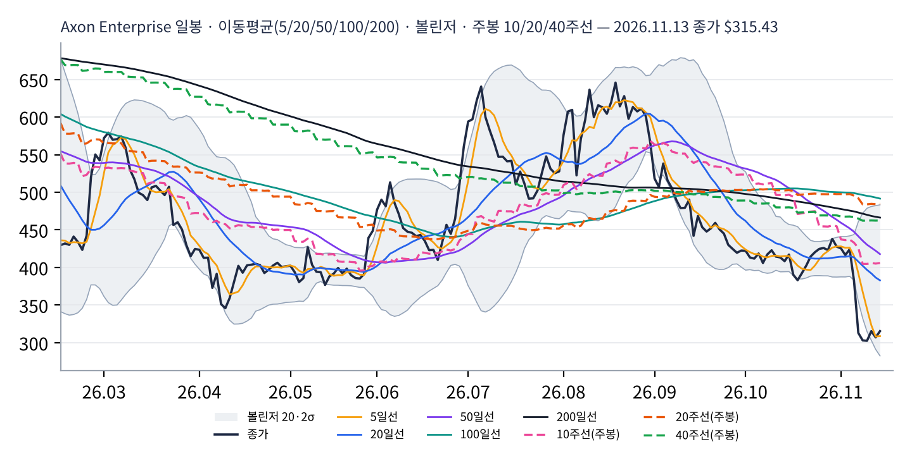
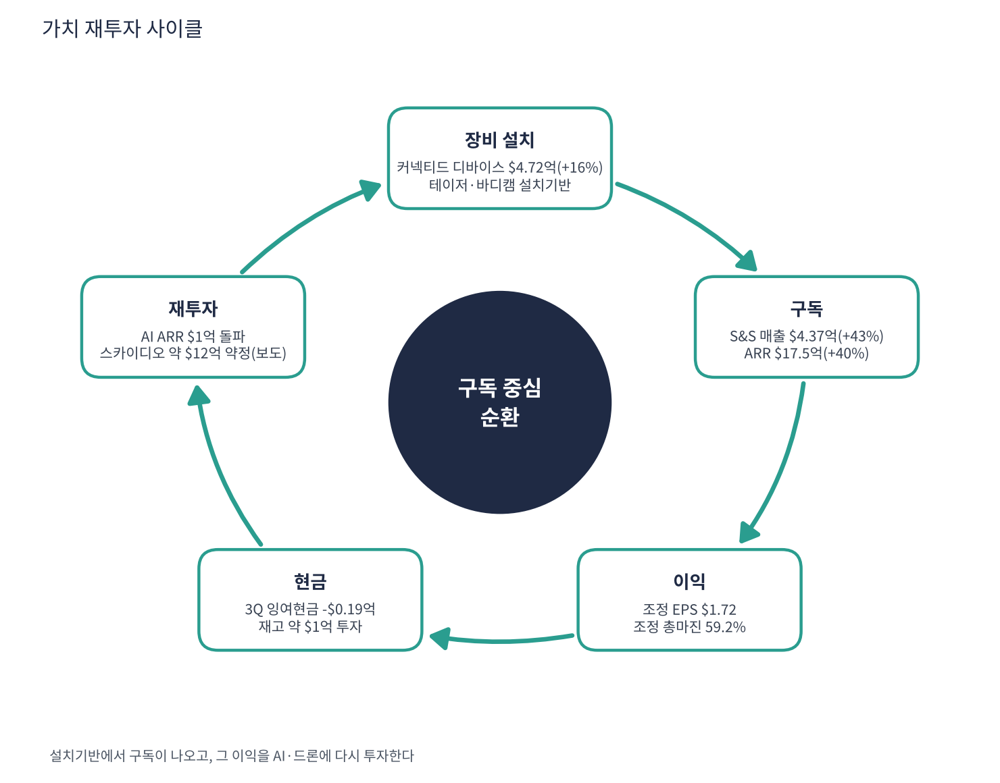

액슨은 테이저(전기충격기), 바디캠·차량 카메라, 클라우드 증거 관리·AI 소프트웨어, 드론·카운터드론(Dedrone)을 파는 공공안전 기업이다. 이 보고서 시점의 매출은 연 약 $34억 수준(TTM)이다. 3Q 매출이 28% 늘고 소프트웨어 연간 반복매출(ARR)이 40% 늘었지만, 연방 드론 납품 지연으로 가이던스를 낮추고 잉여현금이 적자로 돌아선 회사다.
| 항목 | 내용 |
|---|---|
| 종목 | Axon Enterprise (AXON) · NASDAQ · 공공안전 · 본사 미국 애리조나주 스코츠데일 |
| 밸류에이션 | PER 101배(GAAP TTM), 조정 기준 약 42.9배 · P/S 7.52배 (11/13 종가 $315.43) |
| 최근 분기(3Q26) | 매출 $9.09억(+28%), 순이익 $0.57억, GAAP EPS $0.68, 조정 EPS $1.72(컨센서스 약 $1.90 하회) |
| 부문(3Q) | 소프트웨어·서비스 $4.37억(+43%), 커넥티드 디바이스 $4.72억(+16%), 플랫폼 솔루션 $1.25억(+106%) |
| 현금·부채 | 현금 약 $17억, 총차입금 약 $30억, TTM 잉여현금 약 $1억, 3Q 잉여현금 -$0.19억(스캐너·보도) |
| 가이던스(2026) | 매출 $36.1~36.3억(약 +30%, 기존 +32~34%에서 하향), 4Q 매출 $9.9~10.1억, 4Q 조정 EBITDA $2.45~2.5억, 잉여현금 $3.5~4.0억(기존 $4.5억) |
| 다음 일정 | 4Q26 실적 2027.2.9 예정(트레이딩뷰) |
| 직책 | 인물 | 역할·특징 |
|---|---|---|
| 경영진 | 실적 발표 질의응답에서 아이스너(Isner)가 설명 | 연방 드론 납품의 승인·설치 일정이 매출 시점 불확실성을 키웠다고 설명(보도) |
경영 스타일: '구독 소프트웨어와 새 사업에 크게 투자한다'. 3Q에 AI ARR이 $1억을 넘었고 신규 5년 계약 예약이 연초 대비 25% 늘었다고 회사가 밝혔다. 한편 약 $1억의 재고를 전략적으로 쌓아 3Q 잉여현금이 적자가 됐고, 재고 누적은 2027년 초 완화될 것이라고 경영진이 밝혔다(보도).
테이저·바디캠이 설치기반을 만들고, 클라우드 증거 관리와 AI(기록 작성, 실시간 운영)가 반복 매출을 만든다. 순매출 유지율은 126%로 보도됐다.
드론(Dedrone), 911, 기록 관리 등 새 제품이 연환산 약 $5억 규모로 커졌다고 보도됐다. 스카이디오 관련 약 $12억 약정도 보도됐으나 구조는 확인하지 못했다.
다음 실적발표는 세 가지 질문에 답하는 자리다.
1. 이익이 이번 분기에 개선되나?
2. 악재 '가이던스 하향·실적 부진' 부담이 줄어드나?
3. 악재 '현금 적자' 부담이 줄어드나?
한 줄 판정 규칙: 첫 질문의 이익이 좋아지면 약한 고리가 풀리고, 그렇지 않으면 현재 사이클의 약점이 그대로 남는다.
일정: 다음 발표일은 확인 필요(이번 분기 발표 후 일정 미확정). 위 현재값은 이 보고서의 기존 숫자다.
| 분기 | 매출 | 순이익 | EPS | 조정 EPS | 특이 사항 |
|---|---|---|---|---|---|
| 2024.4Q | $5.8억 | $1.35억 | 1.67 | 2.08 | |
| 2025.1Q | $6.0억 | $0.88억 | 1.08 | 1.41 | |
| 2025.2Q | $6.7억 | $0.36억 | 0.44 | 2.12 | |
| 2025.3Q | $7.1억 | $-0.02억 | -0.03 | 1.17 | 순손실(GAAP EPS -0.03) |
| 2025.4Q | $8.0억 | $0.03억 | 0.03 | 2.15 | GAAP과 조정 EPS 격차 큼(원인 미확인) |
| 2026.1Q | $8.1억 | $1.69억 | 2.05 | 1.61 | GAAP EPS가 조정 EPS보다 높음(원인 미확인) |
| 2026.2Q | $9.0억 | $0.29억 | 0.36 | 1.88 | |
| 2026.3Q | $9.1억 | $0.57억 | 0.68 | 1.72 | 매출 +28%, 조정 EPS 컨센서스 하회 |


흐름 요약: 분기 매출은 $5.75억에서 $9.09억으로 늘었다. 성장률은 4Q25 +39%, 1Q26 +34%, 2Q26 +35%, 3Q26 +28%로 3분기 연속 둔화했다. GAAP EPS와 조정 EPS의 격차가 크다(4Q25 $0.03 vs $2.15). 원인은 이 자료에서 확인하지 못했다. 3Q26 조정 EPS $1.72는 보도별 전년 대비 증가율이 달라(약 +39~47%) 정확한 값을 쓰지 않았다. 영업이익과 분기 설비투자는 구하지 못해 표에서 뺐다.
| 부문 | 3Q26 매출 | 증감 | 비고 |
|---|---|---|---|
| 소프트웨어·서비스 | $4.37억 | +43% | ARR $17.5억(+40%), AI ARR $1억 돌파 |
| 커넥티드 디바이스 | $4.72억 | +16% | 테이저 매출은 전년 대비 감소(보도) |
| 플랫폼 솔루션 | $1.25억 | +106% | 드론(Dedrone) 중심 |
소프트웨어가 성장을 이끈다. 지역별로는 미국 85%(약 $7.72억), 해외 15%다. 연방 드론 3건(약 $1.3억)이 4Q에서 빠지며 연 매출 성장이 +30% 안팎으로 낮아졌다.
액슨은 '장비에서 구독 플랫폼으로' 방향을 잡았다.
| 축 | 최근 움직임 |
|---|---|
| 소프트웨어 | S&S +43%, AI ARR $1억 |
| 새 사업 | 플랫폼 솔루션 +106%, 드론 |
| 위험 | 연방 납품 지연, 바디캠 교체 주기 일시 정지 가능성(2027 1Q, 보도) |
| 가이던스 | 매출 +30%로 하향, 잉여현금 $3.5~4.0억 |

| 이동평균 | 값 | 종가 대비 | 해석 |
|---|---|---|---|
| 5일선 | $308.74 | +2.2% | 현재가가 위 |
| 20일선 | $382.92 | -17.6% | 현재가가 아래 |
| 50일선 | $417.79 | -24.5% | 현재가가 아래 |
| 100일선 | $491.60 | -35.8% | 현재가가 아래 |
| 200일선 | $466.37 | -32.4% | 현재가가 약 32% 아래 |
주봉 흐름: 2025년 10월 $670~736 → 11월 급락 $522 → 2026년 1월 $631 → 2~4월 $346~430 → 7월 고점 $665 → 10월 $390~430 → 11월 둘째 주 $313 → 11/13 주 $315(52주 저점 $291.5 근처). 모든 이동평균선이 현재가 위에 있다.
| 규칙 | 기준 | 현재 값 | 신호 |
|---|---|---|---|
| 장기 추세 필터 | 종가 vs 200일선 | $315.43 < $466.37 | 매도 |
| 중장기 교차 | 50일선 vs 200일선 | $417.79 < $466.37 | 매도 |
| 단기 교차 | 20일선 vs 50일선 | $382.92 < $417.79 | 매도 |
| 돈키언 채널 | 55일 고가 $616.00 / 저가 $291.45 | 중간값 $453.73 아래 | 매도 |
| 1개월 모멘텀 | 21거래일 수익률 | -24.4% (기준 $417.19) | 매도 |
| 3개월 모멘텀 | 63거래일 수익률 | -47.8% (기준 $604.32) | 매도 |
| 6개월 모멘텀 | 126거래일 수익률 | -19.5% (기준 $391.88) | 매도 |
| 12개월 모멘텀 | 252거래일 수익률 | -44.6% (기준 $569.51) | 매도 |
| 종합 (8개 평균) | -1.00 | 강한 매도 |
해석: 8개 신호가 모두 매도(점수 -1.00)다. 14일 ATR $24.14 (7.7%)로 가격 대비 변동폭이 크다.
| 가격 | 무엇이 바뀌나 | 의미 |
|---|---|---|
| $382.9 돌파 | 20일선 | 20/50 신호는 50일선($417.8)도 넘어야 매수로 전환 |
| $391.9 돌파 | 6개월 기준가 | 6개월 모멘텀 매도 → 매수 |
| $417.2 돌파 | 1개월 기준가 | 1개월 모멘텀 매도 → 매수 |
| 구분 | 가격대 | 근거 |
|---|---|---|
| 저항 1 | $383 ~ 418 | 20일선 $382.9, 50일선 $417.8 |
| 저항 2 | $466 | 200일선 |
| 지지 1 | $291.5 | 52주 저점(11/10) |
| 하방 | $291.5 이탈 시 | 직전 기준 가격대 없음(신저가) |
신호가 모두 매도라 신규 진입은 보류한다. 20일선($383)과 50일선($418)을 되찾고 20/50 신호가 바뀌는지 확인한 뒤 계획 비중의 30%만 진입한다. 이미 보유 중이면 52주 저점 $291 종가 이탈 시 정리한다. 2/9 실적이 확인 지점이다.
| 악재 요인 | 내용 | 강도 |
|---|---|---|
| 가이던스 하향·실적 부진 | 연방 드론 $1.3억 지연, 조정 EPS 컨센서스 하회 | 높음 |
| 현금 적자 | 3Q 잉여현금 -$0.19억, 재고 약 $1억 투자 | 높음 |
| 성장 둔화 | 매출 성장 3분기 연속 둔화(+39→34→35→28%) | 중간 |
| 교체 주기 공백 | 2027 1Q 바디캠 교체 일시 정지 가능성(보도) | 중간 |
| 밸류에이션 | 조정 PEG 약 5.0 | 높음 |
| 티커 | 회사 | PER(TTM) | PEG | P/S | EPS 성장(YoY) |
|---|---|---|---|---|---|
| AXON | 액슨 | 42.9배 | 5.00 | 7.52배 | +9% |
| GE | GE 에어로스페이스 | 43.1배 | 1.68 | 6.55배 | +26% |
| RTX | RTX | 26.5배 | 1.37 | 2.83배 | +19% |
| LMT | 록히드마틴 | 21.2배 | – | 1.77배 | +57% |
| TDG | 트랜스다임 | 34.2배 | – | 6.46배 | +11% |
AXON·GE·RTX는 조정 EPS 기준(내 계산), LMT·TDG는 트레이딩뷰 GAAP TTM이다. 액슨은 사업 성격이 달라 항공·방산주와 직접 비교하기 어렵다.
비교 결론: AXON은 PER 42.9배와 PEG 5.0으로 비교군 중 성장 대비 가장 비싸다. 소프트웨어 성장은 강하지만 이익과 현금이 따라오지 못한다.
액슨은 현금이 차입금보다 적고 3Q 잉여현금이 적자다. 현금 약 $17억, 총차입금 약 $30억이다.
| 지표 | 값 | 계산·출처 | 해석 |
|---|---|---|---|
| 현금 등 | 약 $17억 | 스캐너 | |
| 총차입금 | 약 $30억 | 스캐너 | 순부채 약 $13억 |
| TTM 잉여현금흐름 | 약 $1억 | 스캐너 | – |
| TTM EBITDA(GAAP 기준) | 약 $2억 | 스캐너 | 조정 EBITDA는 이 자료에서 수집하지 못함 |
| 기준 | 값 | 비고 |
|---|---|---|
| P/S (TTM) | 7.52배 | TTM 매출 약 $34.2억(내 계산) |
| P/FCF | 약 257배 | TTM 잉여현금 $1억(내 계산). 가이던스 중간 $3.75억 기준 약 69배 |
| 동종 | GE 6.6, 트랜스다임 6.5, RTX 2.8, 록히드마틴 1.8 | 11/13 스캐너 |
해석: 3Q 영업현금은 $0.20억(전년 $0.60억), 잉여현금은 -$0.19억(전년 +$0.33억)이다. 가이던스 잉여현금을 $3.5~4.0억으로 낮췄고 60% 전환율 복귀는 2028년으로 미뤘다는 보도가 있다. 스트레스 가정: P/FCF 40배면 약 $184 (-42%), 60배면 약 $276 (-12%), 80배면 약 $368 (+17%)이다(내 가정, 가이던스 중간 $3.75억 고정).
| 지표 | 값 | 판정 |
|---|---|---|
| PER (GAAP TTM) | 101배 | 트레이딩뷰, GAAP TTM EPS $3.12 |
| PER (조정 TTM) | 42.9배 | 최근 4분기 조정 EPS 합 $7.36(내 계산) |
| EV / EBITDA | GAAP 기준 약 135배 | EV(차입금 $30억 − 현금 $17억 반영) ÷ GAAP EBITDA $2억. 4Q 조정 EBITDA 가이던스($2.45~2.5억)를 연환산하면 약 $10억, 약 27배(내 가정) |
| 방식 | PER | EPS 성장률 | PEG | 판정 |
|---|---|---|---|---|
| 트레이딩뷰 (GAAP TTM) | 101배 | -1.1% | 산출 불가 | GAAP EPS가 줄어듦 |
| 조정 EPS 기준 | 42.9배 | +8.6% | 약 5.0 | 기준 초과 |
| 조정 TTM $7.36 ÷ 직전 TTM $6.78 | – | – | – | 직전: 4Q24 2.08 + 1Q25 1.41 + 2Q25 2.12 + 3Q25 1.17 |
판정: 조정 PEG 약 5.0으로 기준(1.0)을 크게 넘음. 매출은 28% 늘지만 조정 EPS 최근 4분기 합은 8.6%만 늘었다. 투자 확대로 이익이 매출을 따라가지 못한다.

액슨의 사이클은 장비 설치 → 구독 → 이익 → 현금 → 재투자다. 약한 고리는 현금과 이익 전환이다.
| 고리 | 현재 숫자 | 고리 강도 | 약해지는 신호 |
|---|---|---|---|
| ① 장비 | 커넥티드 디바이스 +16% | 보통 | 테이저 감소, 교체 주기 정지 |
| ② 구독 | S&S +43%, ARR +40% | 강함 | 순매출 유지율 하락 |
| ③ 이익 | 조정 EPS $1.72(컨센서스 하회) | 약함 | 투자 비용 증가 |
| ④ 현금 | 3Q 잉여현금 -$0.19억 | 약함 | 재고 누적 |
| ⑤ 재투자 | AI·드론·스카이디오 약정 | 진행 | 약정 부담 |
구조: 강한 고리는 ②뿐이고 ③④가 약하다. 구독은 크게 늘지만 이익과 현금이 투자 속도를 따라가지 못한다.